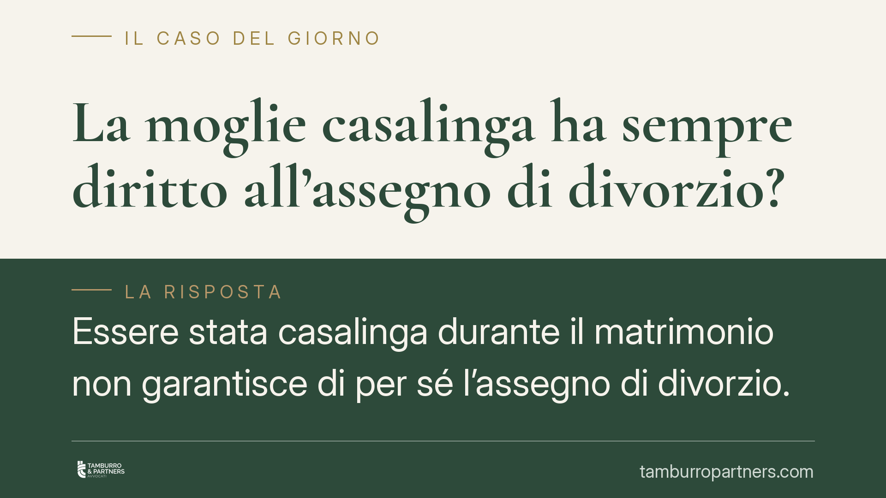

La moglie casalinga ha sempre diritto all'assegno di divorzio?
Essere stata casalinga durante il matrimonio non garantisce di per sé l'assegno di divorzio. La Cassazione ribadisce che il mancato lavoro è un dato neutro: occorre dimostrare rinunce professionali concrete e un contributo effettivo alla carriera o al patrimonio dell'altro coniuge. Un orientamento che sposta tutto sul piano della prova.

Il principio: nessun automatismo
Per anni ha circolato una convinzione diffusa: la moglie che ha rinunciato a lavorare per occuparsi della casa e dei figli avrebbe comunque diritto a un assegno dopo il divorzio. La giurisprudenza di legittimità ha smontato questa idea.
La Corte di Cassazione ha chiarito che il semplice fatto di non aver svolto attività lavorativa durante il matrimonio è un dato neutro. Da solo non dice nulla di decisivo: non prova né che ci sia stato un sacrificio, né che il coniuge più forte abbia tratto un vantaggio da quella scelta. Serve altro.
Inquadramento normativo
Il riferimento è l'art. 5, comma 6, della Legge 1° dicembre 1970 n. 898 (legge sul divorzio). La norma subordina il diritto all'assegno all'inadeguatezza dei mezzi del richiedente e all'impossibilità di procurarseli per ragioni oggettive.
Le Sezioni Unite della Cassazione (sentenza 11 luglio 2018, n. 18287) hanno dato all'assegno divorzile una natura composita: non solo assistenziale, ma anche compensativa e perequativa. In pratica, l'assegno serve anche a riequilibrare le posizioni quando uno dei coniugi ha sacrificato le proprie aspettative professionali per la famiglia, consentendo all'altro di costruire carriera o patrimonio.
Qui entra in gioco anche l'art. 2729 del codice civile, che disciplina le presunzioni: chi chiede l'assegno può provare il proprio contributo anche per via indiretta, ma le presunzioni devono essere gravi, precise e concordanti. Non basta l'affermazione generica.
Perché il non aver lavorato è un dato neutro
Questo è il punto centrale. Chi chiede l'assegno nella veste di ex casalinga deve fornire una tripla prova:
- La rinuncia concreta: aver effettivamente abbandonato o non intrapreso un percorso professionale a cui si sarebbe potuto accedere. Non un'astratta possibilità, ma una scelta reale e documentabile.
- Il nesso con le esigenze familiari: che quella rinuncia sia dipesa da un accordo, esplicito o di fatto, sulla divisione dei ruoli nella coppia.
- Il vantaggio prodotto all'altro coniuge: che il sacrificio abbia favorito la carriera o l'incremento patrimoniale dell'ex marito.
Se anche uno solo di questi elementi manca, la domanda può essere respinta. Il giudice non presume il sacrificio: lo verifica.
Implicazioni pratiche
Per chi affronta un divorzio, il messaggio è chiaro: la causa si vince o si perde sulle prove, non sui ruoli dichiarati.
L'ex coniuge che si è dedicato alla famiglia non parte avvantaggiato per il solo fatto di non aver lavorato. Deve ricostruire la propria storia personale e professionale in modo documentato: titoli di studio conseguiti e mai utilizzati, offerte di lavoro rifiutate, trasferimenti seguiti per la carriera dell'altro, periodi di attività interrotti alla nascita dei figli.
Sul fronte opposto, chi riceve la domanda di assegno può contestare efficacemente l'assenza di questi elementi, chiedendo che la controparte dimostri in concreto il sacrificio e il suo riflesso sul tenore di vita attuale.
L'età, lo stato di salute, la durata del matrimonio e le effettive possibilità di reinserimento lavorativo restano criteri rilevanti, ma vanno anch'essi provati e non semplicemente enunciati.
Cosa fare in concreto
- Raccogliete la documentazione professionale: diplomi, lauree, contratti precedenti, corrispondenza con datori di lavoro, prova di attività interrotte. Serve a ricostruire ciò a cui si è rinunciato.
- Documentate le ragioni della rinuncia: trasferimenti familiari, nascita dei figli, assenza di supporto esterno. Collegate ogni scelta a un'esigenza concreta della famiglia.
- Ricostruite l'apporto all'altro coniuge: dimostrate come la vostra gestione domestica abbia liberato tempo ed energie dell'ex per la sua attività o per l'incremento del patrimonio.
- Analizzate la situazione economica attuale: redditi, patrimoni, possibilità reali di reinserimento lavorativo di entrambi. L'assegno guarda allo squilibrio presente, non solo al passato.
- Valutate con un legale la strategia probatoria fin dall'inizio: in questa materia l'esito dipende dalla qualità delle prove raccolte, che vanno predisposte prima dell'udienza.
È opportuno affrontare queste cause con una ricostruzione documentale accurata, perché su affermazioni generiche la domanda rischia il rigetto.
---
*Contributo informativo a cura di Tamburro & Partners - Avv. Giuseppe Tamburro. Non costituisce parere legale.*
Ogni famiglia ha il suo equilibrio.
Separazione, divorzio, affidamento, assegno: se vuoi un confronto riservato su una specifica situazione, scrivi allo studio. Ti rispondiamo entro un giorno lavorativo.